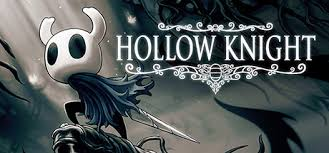
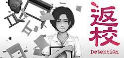
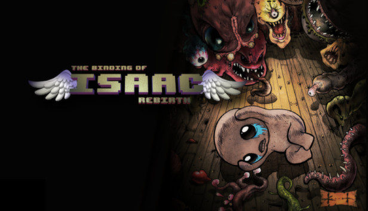
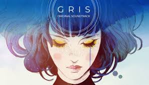
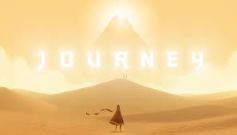
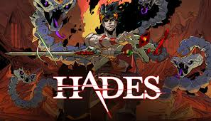
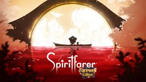
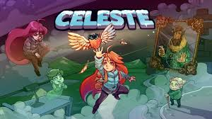

What is independent game?
An indie game is a video game created by individuals or small teams without the financial support of a major publisher. Developers have full creative control over their projects, which allows them to explore unique ideas and experimental designs. Although indie games are usually made with limited budgets, they often stand out for their creativity, storytelling, and emotional depth.






Why is independent game so unique?
Independent games are unique because they are driven by creativity rather than profit. Without pressure from large publishers, developers can take risks, tell personal stories, and experiment with gameplay. This freedom allows indie games to explore new emotions, ideas, and artistic styles that big studios often avoid.




About related events
Around the world, many events celebrate the creativity of indie game developers. Famous examples include the Independent Games Festival (IGF), BitSummit in Japan, and the Taipei Game Show Indie House in Taiwan. These events give small teams a chance to showcase their work, meet other creators, and reach new audiences.
